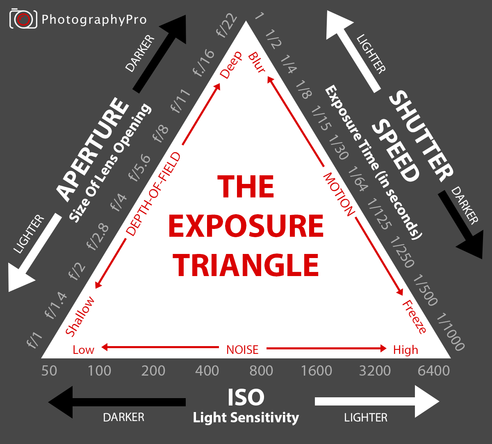

Треугольник экспозиции
Экспозиция — один из фундаментальных терминов фотографии. Когда во время съемки вы нажимаете кнопку спуска затвора, чтобы открыть диафрагму, свет попадает внутрь и срабатывает датчик.
Экспозиция — это количество света, которое попадает на датчик камеры, генерируя визуальные данные за определенный период времени.
Три основных элемента, которые необходимо учитывать, настраивая экспозицию, это ISO, диафрагма и скорость затвора.
Каждый из элементов треугольника взаимодействует со светом и влияет на экспозицию.
Чем больше диафрагма, тем больше света и меньше глубина резкости
Чем больше скорость затвора, тем больше света и размытости
Чем больше ISO, тем больше света и шума.